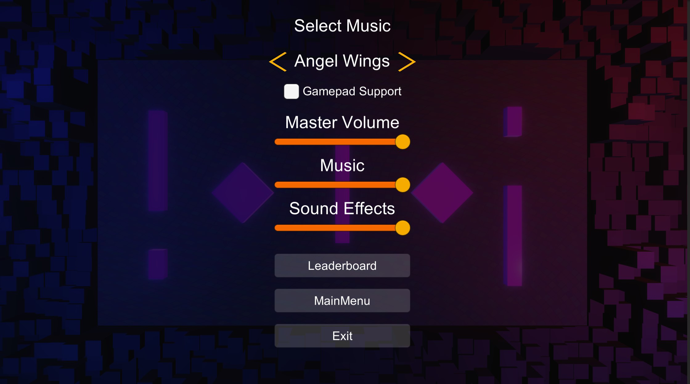
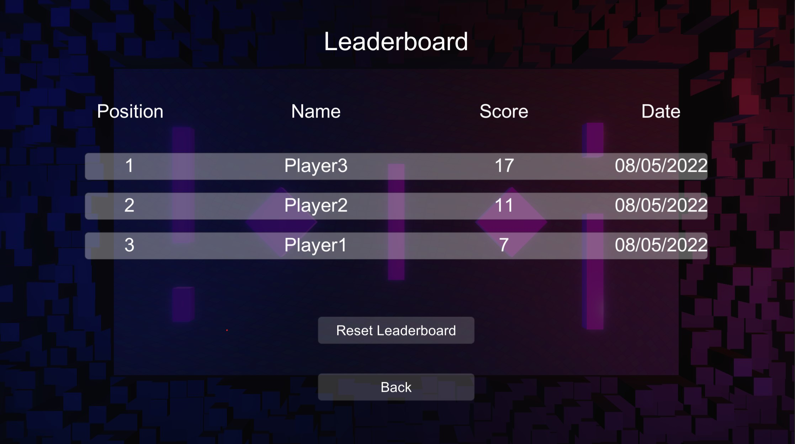
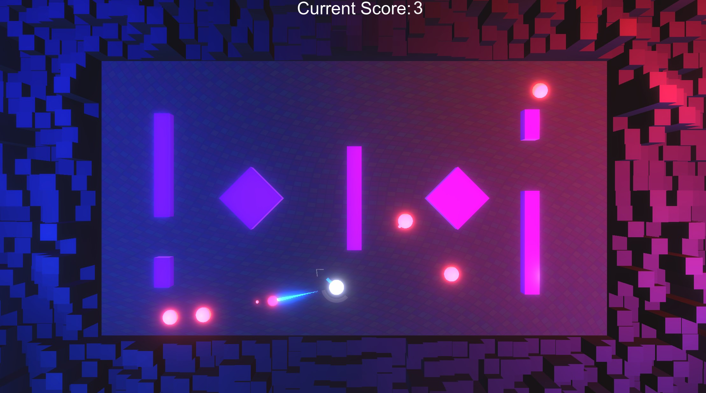
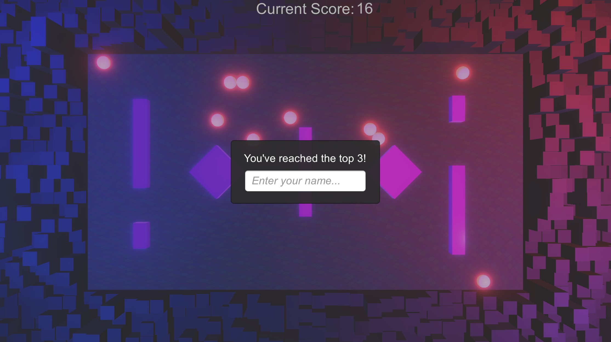

I created Partit Up as a gamejam. I used Photoshop and a shadergraph to create the disco floor. The renderer used is URP.
A video preview of the game
In the video, you can see that the player has 3 arrows in front of him, indicating you're able to shoot one time for each arrow. You can also see the charging bar. If you charge for too long the player discharges. The player's remaining life is displayed by the changes in color, the more hits the more red the player flashes.

The menu of the game can be used to change the music, add gamepad support and check the top 3 scores in the leaderboard as well as delete the data in it.
 The space in which the enemies move is limited by the baked NavMesh.
After the enemies finally defeat you, if you score better than the third player then you'll be prompted to enter your name in order to be added to the leaderboard
